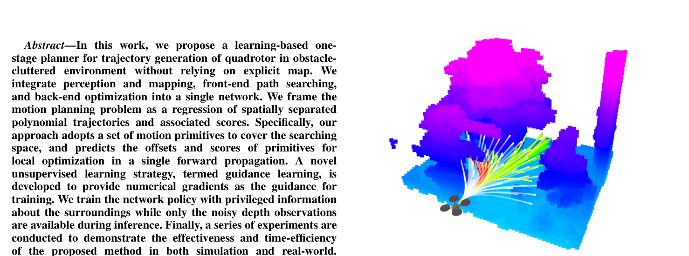
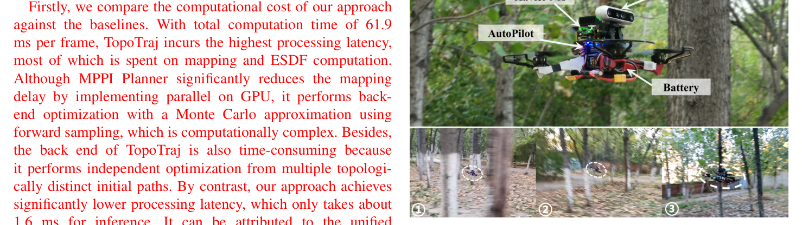

| 条目 | 内容 |
|---|---|
| 英文标题 | You Only Plan Once: A Learning-Based One-Stage Planner With Guidance Learning |
| 中文译名 | 《一次规划即成：一种带引导学习的单阶段学习型规划器》。简称 YOPO，明显借用了目标检测里 YOLO（You Only Look Once）的命名句式——作者想强调的正是"规划也可以只看一次"。 |
| 作者 | Junjie Lu, Xuewei Zhang, Hongming Shen, Liwen Xu, Bailing Tian（通讯作者，论文脚注标注 “Corresponding author: Bailing Tian”） |
| 单位 | 天津大学 电气自动化与信息工程学院（School of Electrical and Information Engineering, Tianjin University, Tianjin 300072, China），邮箱域名为 @tju.edu.cn |
| 发表 | IEEE Robotics and Automation Letters (RA-L), 2024（IEEE Xplore 文献号 10528860） |
| 论文类型 | 方法类（method paper）：单阶段学习型局部规划器 + 无监督训练策略，实验含仿真对比与实机飞行 |
| DOI / 在线 | IEEE Xplore 文献页 10528860（该文献号取自仓库 README 的引用链接）。论文 PDF 抽取文本中不含 DOI 字符串与 arXiv 编号，故此处不臆写 DOI / arXiv；若需正式引用请从 Xplore 页面抄录。 |
| 本地 PDF | YOPO_RAL2024_YouOnlyPlanOnce.pdf（8 页，RA-L 双栏版式） |
| 代码仓库 | https://github.com/TJU-Aerial-Robotics/YOPO（论文写作时尚未放出，原话为 “The code will be released at …”） |
| 补充材料 | 论文给出的视频：youtu.be/GoqZM3TxDbM；仓库 README 另给出 YouTube 版 与 B 站版，以及实飞视频 youtu.be/LHvtbKmTwvE |
| 基金 | 国家自然科学基金（NSFC）62273249、62203415、62022060、62073234 |
| 一句话摘要 | 把"感知建图 → 前端路径搜索 → 后端轨迹优化"这条经典三段式管线压进一次前向传播：用均匀铺在深度相机 FOV 内的运动基元（motion primitives）充当 YOLO 里的 anchor，网络对每个基元并行回归「角度/半径偏移 + 末端导数 + 代价值」，再以引导学习（guidance learning）——把特权 ESDF 上代价函数的数值梯度经链式法则直接反传到网络权重——完成无专家、无标签的训练。仿真推理 1.6 ms，Xavier NX + TensorRT 约 16 ms，实飞密林最大速度 5.52 m/s。 |
| 关键词 | 单阶段规划器 运动基元锚点 引导学习 特权学习 深度图端到端 无显式地图 RA-L 2024 |
1.Paper/YOPO/ 克隆的是 YOPO-Simple 分支（git log 仅一条 Snapshot import of TJU-Aerial-Robotics/YOPO@YOPO-Simple），即仓库 README 中
[2025-6-17] 那次“用 Python/PyTorch 大幅简化重构、并把 Flightmare 换成自研 CUDA 加速随机环境”之后的版本，而不是论文（2024）对应的 main 分支 C++/CUDA 实现。两者在算法主干上一致（基元锚点 + 全卷积头 + 代价梯度反传），但在
损失项构成、分数的符号与激活、优化器与超参、仿真器、部分后处理 上有可核实的差异。本笔记凡涉及代码处均以本地真实文件为准，并在与论文不一致处显式标注（见 第 3 节 与 第 6 节）。
argmin 选一条。| 灵感来源 | → 启发产生的洞察 | 类型 |
|---|---|---|
| YOLO 单阶段目标检测（Redmon et al., CVPR 2016，论文引 [13]） | → 检测器不再"先提候选框再分类"，而是对预定义 anchor 并行回归 offset + confidence。规划可以照搬：基元 = anchor，offset = 角度/半径修正，confidence = 代价的负值。这一步把"前端搜索 + 后端优化"的串行结构彻底并行化。 | 架构 |
| Richter et al. 多项式轨迹规划（ISRR 2016，论文引 [15]） | → 提供了 $A=M^{-1}d$、把状态向量拆成固定块 $d_F$ 与自由块 $d_P$、光滑代价写成 $\begin{bmatrix}d_F\\ d_P\end{bmatrix}^{\!\top}\!B\begin{bmatrix}d_F\\ d_P\end{bmatrix}$ 的整套代数工具，使 $J_s$ 对 $d_P$ 的雅可比有闭式解（Eq.14）——这是"梯度可算"的前提。 | 数学 |
| Gao et al. 梯度型在线安全轨迹生成（IROS 2017，论文引 [6]） | → 提供了"把安全代价写成势函数沿轨迹的积分、再用 ESDF 查距离与梯度"的范式，以及 $c(d)=\exp(-(d-d_0)/k)$ 这一势函数形式。本文把它从"优化器的输入"改造成"网络的教师信号"。 | 方法 |
| LPNet（作者自己的前作，RA-L 2023，论文引 [11]） | → 已经验证"用模仿学习让网络直接输出避障反应"可行，但用的是全连接头一次性输出所有基元、且只做碰撞预测/回归。本文的改进正是针对它的两个痛点：全连接头无法处理平移非不变性，以及专家标签的上界限制。 | 反思 |
| 特权学习 / 非对称 actor-critic（"learning by cheating" 思路，论文以 privileged learning 表述） | → 训练时给网络"作弊"的权利：真值点云、真值 ESDF、完整状态都可用于算梯度；推理时只给带噪深度图。于是网络学到的是"从残缺观测推断完整几何"的映射，天然对噪声鲁棒，且不需要时序滤波。 | 数据 / 训练 |
| Flightmare 仿真器（Song et al., CoRL 2021，论文引 [16]） | → 提供可并行、可随机重置状态的渲染环境，使"10 万个样本、1–2 分钟采完、只需采一次"成为现实；离线数据集也把训练与仿真器解耦，训练期不再需要在线交互。 | 基础设施 |
| 创新点 | 它解决的问题（为什么别人不做） | 具体设计 |
|---|---|---|
| ① 单阶段规划器 | 三段式每段都有不可压缩的串行延迟：TopoTraj 总计 61.9 ms（建图 48.5 + 前端 6.1 + 后端 7.3）。对 5 m/s 级飞行，60 ms 意味着 30 cm 盲飞距离 | 深度图 $1\times96\times160$ + 9 维状态一起进网络；ResNet-18 + 三个 $1\times1$ 卷积头输出 $M_\phi\times M_\theta\times 10$（3 偏移 + 3 末端速度 + 3 末端加速度 + 1 分数）；argmin 选基元后只解一条五阶多项式 |
| ② 全卷积 + 基元系 | $1\times1$ 卷积共享权重隐含"平移不变"，但规划要求左右网格给出相反的偏移，否则梯度矛盾。前作 [11] 用全连接层回避，代价是无法共享权重、无法利用空间结构 | 定义 $R_{ij}=R_z(\phi_i)R_y(-\theta_j)$，把状态与目标方向转到基元系 $x'_{ij}=R_{ij}^{-1}x$ 后拼到特征图对应位置；末端导数也在该系内定义，最后转回机体系 |
| ③ guidance learning | 模仿学习天花板 = 专家；RL 的 reward 稀疏带噪、critic 本身是误差源；[12] 只判断撞不撞、不给改进方向。共同浪费：都把连续代价地形压成了离散标签或标量回报 | 用特权信息算 $J=\lambda_sJ_s+\lambda_oJ_o+\lambda_gJ_g$，解析写光滑/目标项雅可比、离散积分算安全项雅可比，经三级链式反传；分数用 SmoothL1 拟合 |
| 方法族 | 代表 | 监督信号 | 多模态处理 | 延迟来源 | 本质局限 |
|---|---|---|---|---|---|
| 经典三段式 | TopoTraj [3] | 无（人工代价） | 拓扑路径搜索枚举同伦类 | 建图/ESDF 48.5 ms + 多初值独立优化 | 串行延迟高；建图概率更新滞后于高速飞行 |
| 采样 + 免梯度 | MPPI + Hybrid A* [17] | 无 | 前向随机采样 | GPU 建图 6.5 ms，蒙特卡洛后端 8.2 ms | 采样数受限，突然障碍难逃逸；光滑性靠随机最优控制形式保证 |
| 模仿学习端到端 | Agile Autonomy [8] | 专家轨迹（距离损失） | 多假设 + winner-takes-all | 仅推理 5.4 ms | 性能上界 = 专家；WTA 易模式坍塌；不考虑光滑性惩罚 |
| 基元碰撞预测 | [12] | 碰撞标签 | 枚举预定义基元 | 取决于基元库规模 | 基元库固定、无法表示复杂轨迹；只分类不改进 |
| 本文 YOPO | — | 代价函数数值梯度（无专家、无标签） | 锚点枚举 + 每个锚点独立回归偏移 | 仅 1.6 ms 前向（全并行） | 无显式地图 ⇒ 无全局一致性；安全无形式化保证 |
flowchart TB
subgraph SENSE["① 输入层（机体系，维度已降维）"]
D["深度图 1×96×160
0–20 m 线性归一化"]
S["状态观测 9 维
v(3) + a(3) + 目标方向 g(3)"]
end
subgraph NORM["② 观测归一化 + 基元系变换"]
N1["normalize_obs：v/vel_max, a/acc_max, g 截断为单位向量"]
N2["prepare_input：x'_ij = R_ij⁻¹ x
按 3×5 网格拼成 9 通道特征"]
end
subgraph BACK["③ 主干 policy/models/backbone.py"]
B1["ResNet-18 · conv1 改单通道
layer4 后 1×1 卷积 → 64 通道"]
end
subgraph HEAD["④ 全卷积头 policy/models/head.py"]
H1["1×1 Conv 73→256 → ReLU
1×1 Conv 256→256 → ReLU
1×1 Conv 256→10"]
end
subgraph POST["⑤ 输出参数化 yopo_network.forward"]
P1["tanh · 前 9 维 → 偏移与末端导数 ∈ (−1,1)"]
P2["softplus · 第 10 维 → 代价分数 ≥ 0"]
end
subgraph BRANCH["⑥ 训练 / 推理分岔"]
TR["训练：特权真值 ESDF + 完整状态
算 J 与 ∂J/∂y → 反传到权重"]
IN["推理：argmin 选基元 → 套偏移 → 解五阶多项式
→ 50 Hz 参考状态 → 几何控制器"]
end
S --> N1 --> N2 --> B1
D --> B1
B1 --> H1 --> P1
H1 --> P2
P1 --> TR
P2 --> TR
P1 --> IN
P2 --> IN
TR -.->|"AdamW 更新 · 每步一次"| B1
IN -.->|"15 Hz 重规划"| D
classDef s fill:#e6faf8,stroke:#14b8a6,stroke-width:2px,color:#0f766e
classDef n fill:#fef7ed,stroke:#f59e0b,stroke-width:2px,color:#92400e
classDef b fill:#e8f0fe,stroke:#3b82f6,stroke-width:2px,color:#1d4ed8
classDef h fill:#f0ebfd,stroke:#8b5cf6,stroke-width:2px,color:#6d28d9
classDef p fill:#e6f7ee,stroke:#10b981,stroke-width:2px,color:#047857
classDef t fill:#ffeaf0,stroke:#f43f5e,stroke-width:2px,color:#be123c
class D,S s
class N1,N2 n
class B1 b
class H1 h
class P1,P2 p
class TR,IN t
输入 机体系下的 obs $[v_x,v_y,v_z,a_x,a_y,a_z,g_x,g_y,g_z]$（未归一化）｜输出 [B,9,V,H]=[B,9,3,5] 特征张量，直接与深度特征按通道拼接｜实现 ① normalize_obs 按 v/vel_max、a/acc_max 归一，并把 $g$ 除以其模长与 goal_length 的较大者（截断成不超过单位长度）；② prepare_input 对 15 个基元批量做 $x'_{ij}=xR_{ij}$（代码用行向量右乘，等价于 Eq.7 的转置写法），再 permute 成通道维｜路径 YOPO/policy/state_transform.py、YOPO/policy/primitive.py｜工程细节 推理时用 NumPy 版 prepare_input_cpu / pred_to_endstate_cpu，源码注释称比 CUDA 张量版快约 10 倍——张量只有 [1,9,3,5]，kernel launch 开销远大于算术本身，是"小张量别上 GPU"的典型案例。
| 项 | 内容 |
|---|---|
| 输入 | 单通道深度图 [B,1,96,160]，值域 $[0,1]$ 对应 $[0,20]$ m |
| 输出 | [B,64,3,5] 特征图（stride 32：$96/32=3$、$160/32=5$，恰好等于 $M_\theta\times M_\phi$） |
| 关键实现 | resnet18(pretrained=False)；把 conv1 换成 Conv2d(1,64,k=7,s=2,p=3) 以吃单通道深度；把 output_layer 换成 1×1 卷积把 512 维压到 hidden_state=64。另备有 ResNet14（删掉 layer4，输出 256 通道），README 记其 TensorRT 推理在 Orin NX 上约 1 ms vs ResNet-18 约 5 ms。 |
| 仓库路径 | YOPO/policy/models/backbone.py、YOPO/policy/models/resnet.py |
| 设计取舍 | 降采样因子 32 是被网格数反向决定的：$96\times96$、$3\times3$ 网格时用 32；实机 16:9 深度图缩放到 $160\times96$、$5\times3$ 网格，同样用 32。这样"一个特征像素 ↔ 一个基元"严格对齐，不需要 ROI 池化或插值。 |
输入 [B, 64+9, 3, 5]（深度特征与状态特征通道拼接，故 YopoHead(hidden_state + observation_dim, output_dim)）｜输出 [B,10,3,5]，output_dim=10 的语义为 x_pva, y_pva, z_pva, score｜实现 三层 $1\times1$ 卷积 $73\to256\to256\to10$，中间 ReLU，无 padding、无 stride，空间尺寸不变、权重在所有网格间共享——15 条轨迹不是 15 个 head，而是同一个 head 在 15 个位置上各吐一份｜路径 YOPO/policy/models/head.py、YOPO/policy/yopo_network.py。
输入 世界系起点状态 [B,3,3]、预测终点状态 [B*15,3,3]、目标点、map_id｜输出 四项标量代价 smooth(jerk² 积分) / safety(势函数时间积分) / goal(方向相似度) / accel(加速度² 积分)｜实现 qp_generation() 用阶乘公式离线构造 6×6 的 $A$、$H$（jerk 二次型）、$Q$（accel 二次型），再算 $B=A^{-1}$、$L=BC_t$、$R_J=C^\top B^\top H B C$；前向时代价即 dᵀ R d 的批量矩阵乘，完全可导、无需求解器；安全项把 30 个采样点位置送进 F.grid_sample 三线性插值查 ESDF｜路径 YOPO/loss/loss_function.py、smoothness_loss.py、safety_loss.py、guidance_loss.py｜与论文差异 论文只有 $\lambda_sJ_s+\lambda_oJ_o+\lambda_gJ_g$ 三项，重构版多加了加速度代价 wa，并把目标项从 $(d_{Pp}-g)^2$ 换成"沿目标方向的投影长度 + 垂直偏差加权"的相似度形式。
输入 ./dataset/ 下每个子文件夹的深度 PNG + pose-i.csv + pointcloud-i.ply｜输出 saved/YOPO_n/epochX.pth 与 TensorBoard 日志（Train/TrajLoss、Train/ScoreLoss、四个分项）｜实现 YOPOTrainer 用 AdamW（lr=1.5e-4, batch=16，源码默认值为 1e-3/32，由 train_yopo.py 显式覆盖成论文同款）、max_grad_norm=0.1、50 epoch，atexit 兜底保存；forward_and_compute_loss 把 [B,9,V,H] 展平成 [B*V*H,9] 后统一进损失｜数据格式 深度图归一化到 $[0,20]$ m 并存成 16 位 PNG（读取除 65535）；pose-*.csv 列序 px py pz qw qx qy qz；$v_x$ 用对数正态镜像采样到 $[0,1.2v_{\max}]$，$v_y,v_z,a$ 用正态，目标方向 yaw/pitch 各按 $20^\circ/10^\circ$ 扰动，10% 概率生成很近的目标｜路径 YOPO/policy/yopo_trainer.py、yopo_dataset.py、train_yopo.py。
输入 ROS 话题 /sim/odom、/depth_image（32FC1 或 16UC1）、/move_base_simple/goal｜输出 /so3_control/pos_cmd（自定义 PositionCommand：pos/vel/acc/yaw/yaw_dot）+ 三类可视化 Marker｜实现 ① 深度图按编码分支解析（仿真 32FC1 米制，RealSense 16UC1 毫米制除以 1000），截断到 max_dis=20 m 后归一；② cv2.inpaint 对 NaN/过近像素做邻域修复；③ 前向出 10 维后 argmin(score) 选基元，用 Poly5Solver 解三轴五阶多项式；④ 20 ms 定时器按 ctrl_time 发布参考状态，calculate_yaw 生成偏航角与角速率｜路径 YOPO/test_yopo_ros.py、policy/poly_solver.py、control_msg/_PositionCommand.py、yopo_trt_transfer.py、yopo.rviz｜部署开关 文件末尾 settings 字典集中全部适配项：goal、pitch_angle_deg（相机俯仰安装角）、odom_topic、depth_topic、ctrl_topic、plan_from_reference（True 走位置控制器、False 直接吃网络输出）、visualize（实飞建议 False 省算力）。
| 路径 | 作用 |
|---|---|
README.md / LICENSE / hardware/ | 安装与运行说明、开源协议、碳纤维机架 STEP 与相机支架 STL（0°/15° 两版）、hardware_list.pdf 物料清单 |
Controller/src/ | ROS 包：so3_control（SE(3) 几何控制器）、so3_quadrotor_simulator（动力学仿真）、utils；catkin_make 编译 |
Simulator/src/ | 自研 CUDA 加速传感器/环境仿真（sensor_simulator_cuda，另有 CPU 版）；config/config.yaml 配 maze_type（1 溶洞 / 2 柱子 / 3 迷宫 / 5 森林 / 6 房间）、相机与 LiDAR 参数；dataset_generator 节点产出训练集；img/ 存 6 种场景截图 |
YOPO/train_yopo.py | 训练入口：固定随机种子、建 saved/、装配 YopoTrainer、跑 50 epoch |
YOPO/test_yopo_ros.py | 推理入口（ROS 节点）：订阅里程计/深度/目标，发布参考轨迹；内置耗时统计（插值 / 数据准备 / 前向 / 后处理 / 可视化五段） |
YOPO/yopo_trt_transfer.py | PyTorch → TensorRT 权重转换（torch2trt） |
YOPO/config/config.py | 读 traj_opt.yaml 并派生 3 个关键量：goal_length = 2·radio_range、sgm_time = 2·radio_range/vel_max_train、traj_num = horizon×vertical×radio |
YOPO/config/traj_opt.yaml | 全部超参：速度、四项代价权重、图像尺寸、网格数、FOV、规划半径、安全势函数 d0/r、状态采样分布、地图扩展边界 |
YOPO/policy/ | primitive.py（锚点/旋转）、state_transform.py（坐标系与归一化）、yopo_network.py（前向与输出激活）、yopo_dataset.py（数据集与随机化）、yopo_trainer.py（训练循环）、poly_solver.py（五阶多项式与 yaw 生成）、models/（backbone.py / resnet.py / head.py） |
YOPO/loss/ | loss_function.py（$A$/$H$/$Q$ 与权重反归一化）、smoothness_loss.py、safety_loss.py（PLY→ESDF→grid_sample）、guidance_loss.py |
YOPO/saved/ | 训练产物目录。本快照内为空（YOPO_1/ 无文件），预训练权重需按 README 从 GitHub Releases 下载；README 中 saved/YOPO_1/epoch50.pth 的路径在当前 clone 里不存在 |
| 命令 | 说明 |
|---|---|
conda create -n yopo python=3.8 && conda activate yopo | 环境（README 明确测过 Ubuntu 20.04 + Jetson Orin/Xavier NX） |
pip install -r requirements.txt | 锁定 torch 2.4.1+cu118、opencv 4.11、scipy 1.10.1、open3d 0.19.0、ruamel-yaml、rich 等 |
cd Controller && catkin_make | 编译控制器与动力学仿真（需先 conda deactivate） |
cd Simulator && catkin_make | 编译 CUDA 传感器仿真（CUDA 架构检测失败需手改 CMakeLists.txt 的 ARCH_FLAGS） |
rosrun sensor_simulator dataset_generator | 采数据到 ./dataset；README 称 10 万样本约 1–2 分钟，只需采一次 |
python train_yopo.py | 训练 50 epoch；README 称 RTX 3080 + i9-12900K 上 < 1 小时，混合架构 CPU 建议 taskset -c 1,2,3,4 绑 P-core |
roslaunch so3_quadrotor_simulator simulator_attitude_control.launch | 起控制器 + 动力学仿真 |
rosrun sensor_simulator sensor_simulator_cuda | 起环境与传感器（RTX 3060 上深度 > 1000 fps） |
python test_yopo_ros.py --trial=1 --epoch=50 | 起规划节点；traj_opt.yaml 的 velocity 改飞行速度（预训练权重按 6 m/s 训练，0–6 m/s 表现平稳） |
python yopo_trt_transfer.py --trial=1 --epoch=50 → python test_yopo_ros.py --use_tensorrt=1 | TensorRT 部署；README 称 Orin NX 上 ResNet-14 约 1 ms、ResNet-18 约 5 ms |
rviz -d yopo.rviz | 可视化基元、全部预测轨迹、最优轨迹；2D Nav Goal 点击设目标 |
flowchart TB
A["① 取 batch：depth 16×1×96×160（16 位 PNG/65535）· pos 16×3 · quat 16×4 · 随机 v/a/goal · map_id"]
A --> B["② normalize + prepare_input → 9 通道特征"]
A --> C["③ body→world：R_wb 旋转 + 平移"]
B --> D["④ ResNet-18 → 64×3×5 → 1×1 卷积头 → 10×3×5"]
D --> E["⑤ tanh(前 9 维) · softplus(分数) → pred_to_endstate（偏移→极坐标→机体系）"]
E --> C
C --> F["⑥ 15 条轨迹各算 4 项代价
J = ws·Js + wa·Ja + wc·Jo + wg·Jg"]
F --> G["⑦ traj_loss = mean(J)，经 dP→Δ→y 链式反传"]
F --> H["⑧ score_loss = SmoothL1(score, J.detach())"]
G --> I["⑨ AdamW(lr=1.5e-4) + 梯度裁剪 0.1"]
H --> I
I -.->|"下一 batch"| A
min(depth, 20)/20 + 邻域插值补 NaN）。README 的适配说明里特别强调：预训练权重用 16:9 分辨率、90° FOV 训练，接 RealSense 时要把 ROS 驱动分辨率设成 480×270。这一条如果配错，网络看到的视锥与训练分布错位，输出会系统性偏航。
一架四旋翼在未知、杂乱、障碍物密集的环境中以数米每秒前进。机载只有一台前向单目/双目深度相机（实测量程约 6 m）与视觉惯性里程计，不允许维护显式地图（不做 TSDF/占据栅格、不起 ESDF）。要求每一帧深度图到达后，在毫秒级时间内给出一条未来 $T$ 秒的光滑、安全、动力学可行的局部参考轨迹，并持续以重规划频率滚动更新，直到抵达目标点。
与"点到点几何规划"不同，这里的解不是唯一的：绕一棵树从左或从右都可行，代价函数在参数空间上是多峰的。任务要求解多模态性（给出多条候选并挑最好的），而不是把某一个局部极小算到收敛。
alpha=yaw、beta=pitch 的命名一致。| 要素 | 形式化定义 | 说明 |
|---|---|---|
| 观测 $o$ | $o = \big(I_D\in[0,1]^{1\times96\times160},\; v_b\in\mathbb{R}^3,\; a_b\in\mathbb{R}^3,\; \hat g_b\in\mathbb{R}^3\big)$ | 深度图 + 机体速度/加速度 + 目标方向（单位向量）。没有位置、没有姿态——论文明确“the inputs and outputs are represented in the body frame, thereby avoiding the need for position and attitude”，这是维度约简的关键。 |
| 决策 $y$ | $y\in\mathbb{R}^{M_\phi\times M_\theta\times 10}$，每个网格 10 维：$(\Delta\theta,\Delta\phi,\Delta r,\;v_x,v_y,v_z,\;a_x,a_y,a_z,\;s)$ | 前 9 维经 $\tanh$ 限幅，第 10 维分数经正映射保证非负（重构版用 softplus；论文中分数定义为 $-J$，可为负）。 |
| 隐变量（仅在训练期可见） | 真值点云 $\mathcal{P}$、ESDF 距离场 $\mathcal{D}(\cdot)$、完整机体状态 $[p,v,a]$、真实障碍物几何 | 特权信息（privileged information）：只在算梯度时使用，绝不进网络输入。这构成一个"非对称"的信息结构。 |
| 代价 / 回报 | $J=\lambda_sJ_s+\lambda_oJ_o+\lambda_gJ_g$，网络分数 $s\approx -J$（论文）或 $s\approx J$（重构版） | 不是 RL 的 reward：没有折扣、没有时序累积、没有终端奖励，是单步的轨迹级代价。 |
| 动作（执行层） | 选出 $ij^\star=\arg\min_{ij} s_{ij}$，解出 $A$ 后按 $50$ Hz 离散成参考状态，交给 SE(3) 几何控制器 [14] | 网络输出的不是电机指令，而是参考轨迹；底层仍是经典几何控制。这一点使它比端到端 RL 更容易上真机。 |
| 时间结构 | 论文：$T=2$ s 的滚动窗口，重规划 15 Hz，只执行 $1/30$ 的轨迹；重构版：$T=2r/v_{\max}=10/6\approx1.67$ s | "只执行 1/30"= 每 $2/30\approx0.067$ s 重规划一次，与 15 Hz 自洽。重规划频率远高于执行窗口，是高速避障的必要条件。 |
| 相邻任务 | 本任务的不同点 |
|---|---|
| 全局路径规划 / 覆盖规划 | 本文不做全局规划：目标点由外部给定（RViz 点选或上层任务），规划半径 $2r=10$ m，本质是局部滚动规划（local receding-horizon planning），存在"短视陷阱"（大 U 形障碍会卡住）。 |
| 端到端 RL 避障 | 没有环境交互、没有 reward 折扣、没有值函数；训练是离线监督式的（虽然标签不是人给的，而是算出来的）。样本效率高 2–3 个数量级（10 万样本 vs 通常 RL 的千万级）。 |
| 模仿学习规划器（Agile Autonomy 类） | 不需要专家轨迹。损失不是"预测与标签的距离"，而是"代价函数本身"。因此性能不受专家上界约束——Table I 中网络平均代价 0.050 优于专家 0.078。 |
| 轨迹优化（连续时间最优控制） | 不做迭代求解、不做时间分配优化、不处理分段连续性；只解一个固定 $T$、单段、五阶的边值问题。代价是表达能力受限，收益是延迟从 30 ms 降到 1.6 ms。 |
| 学习式碰撞预测（[12] 类） | 不只判断可行性，还输出改进方向（偏移）与相对排序（分数）。基元是起点而非终点。 |
| # | 困难 | 为什么难（本质） | 论文怎么绕过 | 代价 |
|---|---|---|---|---|
| 1 | 解空间多模态、非凸 | 代价函数在参数空间多峰；单初值优化必落局部极小 | 锚点枚举同伦类 + 每锚点独立回归 | 需 $M_\phi M_\theta$ 倍计算（代价被并行化吸收） |
| 2 | 没有可微环境、代价非解析 | ESDF 是离散查询，梯度无法端到端 | guidance learning：数值梯度链式反传 | 训练需特权真值图，只适用于仿真/离线 |
| 3 | 规划不是平移不变任务 | 共享权重的 $1\times1$ 卷积对同一特征强制同一输出 | 基元坐标系 + 输入/输出旋转 | 多一层坐标变换；仍共享权重，容量受限 |
| 4 | 深度观测带噪、视场有限 | 无地图 ⇒ 无时序融合 ⇒ 单帧信息不足 | 特权学习 + 10 万随机场景数据增广 | 对训练分布外场景无保证；无全局一致性 |
| 5 | 机载算力与毫秒级延迟 | 建图 + ESDF + 优化串行叠加 60 ms 量级 | 单次前向 + TensorRT + NumPy 后处理 | 1.6 ms（仿真 GPU）/ 16 ms（Xavier NX）仍非"零延迟" |
导航问题的解集天生是多峰的：绕球障碍可以从任意方位过，绕树可以左也可以右，在森林里甚至存在十几个同伦不同的可行通道。若用"网络 → 一条轨迹"的回归，网络面对的是一对多的映射，L2 损失下的最优解是这些模式的均值——而均值往往正好穿过障碍物。这正是模仿学习里 winner-takes-all（WTA）要解决的模式坍塌（mode collapse）；论文也点名批评：WTA 仍依赖标签分配，且“cannot represent the realistic distribution of cost”。
整个方法最"硬"的技术障碍在这里。经典优化器里，$\partial J_o/\partial d_P$ 是靠查询 ESDF 的梯度得到的（体素中心差分或三线性插值），全程是数值量，与神经网络毫无关系。要把这个信号变成"教师"，必须回答：一条外部算出来的数值梯度，怎么反传到上千个卷积核上？
论文的答案分三步，全部写在 Eq.(15)–(20) 里：① 把安全代价写成离散时间积分 $\sum_\kappa c(p(T_\kappa))\delta t$，使它成为"有限个可查询点上的函数"；② 对每个查询点用链式法则展开 $\partial c/\partial p \cdot \partial p/\partial d_P$，其中 $\partial p/\partial d_P$ 由多项式系数对末端状态的线性关系给出（$L_P$ 是 $M^{-1}C$ 的右块）；③ 合成 $\partial J/\partial d_P$ 后，再乘 $\partial d_P/\partial \Delta$ 与 $\partial\Delta/\partial y$，落到网络输出上。整个过程不需要对 ESDF 求解析导数——只要能在任意点上查到距离，就能算数值梯度。
$1\times1$ 卷积在特征图上滑窗共享权重，本质假设是平移等变：同一特征出现在图像任何位置都应产生同一响应。目标检测里这个假设成立（一只猫在左上角和右下角都是猫）。但规划里它直接矛盾：Fig.4 里左侧网格对应"左前方"的基元，它需要的偏移是"向右修正"；右侧网格对应"右前方"的基元，需要的偏移是"向左修正"。两者的图像特征可以完全相同，期望输出却符号相反。若强行共享权重，梯度会互相抵消，网络只能学到"不偏不倚"的平庸解。
传统管线靠"概率占据栅格 + 时序滤波"消噪：每帧深度图投影成点云、体素投票、贝叶斯更新，噪声被平均掉，同时获得记忆（被遮挡过的障碍仍在图上）。代价是内存与延迟，且"重建障碍的速度"跟不上高速飞行——论文明确指出：概率更新虽然必要（去除量测噪声），但使地图中障碍的重建变慢，这正是经典基线在 8–10 m/s 时成功率崩塌的原因。
本文的选择是彻底放弃显式地图，把"消噪 + 记忆 + 几何推理"全部交给网络的隐式容量，并用特权学习注入真值：训练时网络看到的深度图带噪，但算梯度用的是真值 ESDF。于是网络被迫学习"从残缺观测推断完整几何"的映射，而不是"拟合噪声"。论文把这一点的收益说得很直白：classical 梯度型规划器会因观测不足或错误而陷进障碍物（Fig.6a），MPPI 会因前进方向突然出现的障碍而无法逃逸（Fig.6b），而用完美几何训练的网络能避开这些不可行的局部极小（Fig.6c）。
把延迟预算算清楚，就能理解为什么必须"单阶段"：以实飞最大速度 5.52 m/s 计，60 ms 的管线延迟 = 33 cm 的盲飞距离，恰好是一根树枝的直径量级；而 1.6 ms 只有 0.9 cm。论文给出的对比（Table II）是：TopoTraj 61.9 ms、MPPI 19.7 ms、Agile Autonomy 5.4 ms、本文 1.6 ms。
算力侧的约束同样苛刻：实机计算单元是 NVIDIA Xavier NX（6 核 ARM + 384 CUDA 核），网络经 TensorRT 后仍需约 16 ms——比仿真 GPU 上的 1.6 ms 慢一个数量级。这也解释了重构版仓库里的诸多"微观优化"：StateTransform 提供整套 NumPy 版 CPU 实现（源码注释：小张量上 GPU 反而慢 10 倍）、深度图用 cv2.inpaint 而非张量运算补洞、可视化默认在实机关闭（visualize=False）、TensorRT 转换单独出脚本。
| 平台 | 实现 | 单帧耗时 | 来源 |
|---|---|---|---|
| i7-9700 + RTX 3060 | PyTorch / TensorRT | 1.6 ms（含后处理） | 论文 Table II |
| NVIDIA Xavier NX | TensorRT，实机 | 约 16 ms | 论文第 III-C 节 |
| NVIDIA Orin NX | TensorRT，ResNet-18 / ResNet-14 | 约 5 ms / 约 1 ms | 仓库 README（重构版，非论文数据） |
| RK3566（1 TOPS NPU） | RKNN + INT8，ResNet-14 | 约 20 ms | 仓库 README（重构版，非论文数据） |
注意这套流程完全离线：数据集采一次，训练期不再与仿真器交互，也不需要渲染新图像。论文强调这是相对 RL 的巨大优势——"free of online simulator interaction or rendering"（仓库 README 原话），且"一个深度样本可初始化任意多组状态与目标做增广，无需重新标注或重新交互"。
SmoothnessLoss 甚至不显式求导，而是直接前向算 cost，把求导交给 PyTorch 的 autograd——因为 $B$ 是常数矩阵，autograd 对二次型的导数与解析式完全一致，且更不容易写错。
GuidanceLoss。
score = softplus(output)（保证非负）、score_label = J（同号）、损失 F.smooth_l1_loss(score, label)，即改成"直接回归代价"而非"回归负代价"，数学上等价，工程上更稳（免去符号约定的心智负担）。
argmin 直接淘汰）。但完全丢弃又会让分数头缺乏负样本、排序能力退化——所以分数对全部基元监督，末端状态只对好基元监督，形成一种"非对称监督"。
推理只有五步：① 深度预处理（裁剪到 $[0,20]$ m 归一化，无效值用邻域插值填补以免与"很近的障碍"混淆——论文原话是 avoid confusion with near obstacles）；② 状态归一化 + 基元系变换；③ 一次前向得到 15 组偏移/导数与 15 个分数；④ 取 $\arg\min$ 分数并只解这一条的五阶多项式（论文：“only the optimal trajectory is solved in practice”，这是延迟能压到 1.6 ms 的最后一环）；⑤ 生成偏航角并下发参考——论文取"当前速度方向与目标方向的角平分线"，重构版更精细：weight = 6|Δyaw|/π 让目标方向权重随偏差增大（30° 时等权），并对偏航角速率限幅 $0.5\pi$ rad/s，避免相机朝向突变导致下一帧观测跳变。轨迹按 50 Hz 离散成 $(p,v,a,\text{yaw},\text{yaw\_dot})$ 送 SE(3) 几何控制器 [14]，只执行约 $1/30$（≈0.067 s）后重规划。
| 超参 | 论文取值 | 重构版（traj_opt.yaml / 源码） | 备注 |
|---|---|---|---|
| 轨迹阶数 / 段数 | 5 阶单段 | 5 阶单段（代码注释称保留多段支持但未验证） | 末端状态 9 维 ⇒ 多项式唯一确定 |
| 执行时间 $T$ | 固定 2 s | sgm_time = 2·radio_range/vel_max = 10/6 ≈ 1.67 s | 重构版把 $T$ 与速度耦合，便于变速 |
| 重规划频率 | 15 Hz（只执行 1/30） | 由深度图 30 fps 与后处理决定，控制发布 50 Hz | 两者一致：$T/30\approx0.067$ s |
| 基元数 | $M_\phi\times M_\theta$，实验中 $5\times3=15$ | horizon_num=5, vertical_num=3, radio_num=1 ⇒ 15 | radio_num 目前只支持 1（单层半径） |
| 输入尺寸 / 下采样 | $160\times96$，factor 32 | image_width=160, image_height=96，ResNet-18 天然 stride 32 | $160/32=5$，$96/32=3$，与网格严格对齐 |
| 相机 FOV / 锚点 FOV | 仿真 $90^\circ$；实机 D455 $87^\circ\times58^\circ$ | horizon_camera_fov=90, vertical_camera_fov=60；horizon_anchor_fov=30, vertical_anchor_fov=30 | 锚点角分辨率 15°，偏移上限 ±15°（yaw_diff=0.5·30°） |
| 规划半径 | $r$，实验未单列 | radio_range=5.0 ⇒ 规划视野 $2r=10$ m | 末端半径预测范围 $[0,10]$ m |
| 速度 / 加速度上限 | 仿真对比 2–10 m/s；实飞最大 5.52 m/s | vel_max_train=6, acc_max_train=6；测试 velocity=6 | 测试速度通过 ratio 同比缩放 $v,a,T$ |
| 代价权重 | $\lambda_s,\lambda_o,\lambda_g$（未给数值） | ws=10.0, wa=1.0, wc=1.0, wg=0.15 | 重构版多一项加速度权重 wa |
| 安全势函数 | $d_0,k$（未给数值） | d0=1.2 m，r=0.6（对应论文 $k$） | $c(d)=\exp(-(d-1.2)/0.6)$，$d=1.2$ 处为 1，$d=3$ 处约 0.05 |
| 安全积分采样点 | $\delta t$ 未给，离散求和 | eval_points=30 ⇒ $\delta t=T/30$ | 点太少会"快速穿过障碍"而低估代价（源码注释明确此风险） |
| 优化器 / 学习率 / 批 | Adam，$1.5\times10^{-4}$，batch 16 | AdamW，1.5e-4，batch 16，max_grad_norm=0.1 | train_yopo.py 显式传参，与论文一致 |
| 训练轮数 / 数据量 | 50 epoch，10 万样本，Flightmare | 50 epoch，10 万样本，CUDA 随机环境（1–2 分钟采完） | 论文另用 DAgger 做数据聚合微调 |
| 分数阈值 | 0.04（作用于 $-J$） | 同名阈值逻辑，作用于 cost | 方向相反，语义等价 |
velocity 时不必重调四个权重。这是一条论文里没有、但复现时必须有的工程知识。
本节挑四个"真正的技术内核"展开，目标是讲到能自己复现的程度：为什么锚点能替代前端搜索、梯度究竟怎么穿过一张离散 ESDF、全卷积为什么必须配基元系、以及分数为什么必须单独学。
| 范式 | 做法 | 死穴 |
|---|---|---|
| 采样法（sampling-based） | 撒一堆候选轨迹，逐条算代价，选最好的（MPPI 的蒙特卡洛近似即属此类） | 分辨率与算力线性挂钩：要覆盖 15 个方向的"角度—半径"连续空间，撒 1 万条也不够密；且候选之间彼此独立，无法"往低代价方向挪一步" |
| 梯度法（gradient-based） | 给一个初值，沿 $\partial J/\partial d_P$ 迭代下降（Gao et al. [6] 即属此类，30 ms/50 步） | 初值决定命运：非凸代价下不同初值收敛到不同局部极小；且每步都要查 ESDF，代价随轨迹条数线性增长 |
YOPO 做的事情可以精确地写成：用采样法提供"多初值覆盖"，用梯度法提供"局部精修"，而把梯度法本身蒸馏进网络，使精修变成一次前向。用公式表达，对第 $ij$ 个基元：
primitive.py，direction_diff = horizon_camera_fov / horizon_num = 90°/5 = 18°、altitude_diff = 60°/3 = 20°；锚点角以 0 为中心对称分布（水平 −36°…+36°，垂直 −20°/0°/+20°）。特别注意 yaw_diff = 0.5·horizon_anchor_fov = 15° 不是网格间距，而是偏移量的上限——两者量级相近但语义完全不同，混淆会导致覆盖出现盲带。
从权重到代价只有一条路径，且每一环都可解析求导：权重 $\theta$ → $y$（$\tanh$ 之后）→ 偏移 $\Delta$ 与末端导数 → 末端状态 $d_P$ → 多项式系数 $A$ → 采样点 $p(T_\kappa)$ → 三线性插值得到距离 $d_\kappa$ → 势函数 $c$ → 代价 $J_o$。反向传播沿这条链逐环回乘，其中最"物理"的两环是 $\partial A/\partial d_P=L_P$（常数矩阵，离线算好）与 $\partial p/\partial A=T_\kappa$（幂基求值）；最"几何"的两环是球坐标雅可比与 grid_sample 的插值斜率。
论文写的是"数值梯度反传"，而重构版给出了更优雅的工程实现：让 ESDF 查询本身成为可微算子，把求导交给 autograd。具体三步（YOPO/loss/safety_loss.py）：
pointcloud-i.ply，按 voxel_size=0.2 m 体素化，用 scipy.ndimage.distance_transform_edt 对自由区与障碍区各算一次欧氏距离变换，障碍内取负号 ⇒ 有符号距离场（SDF）。z 轴额外向上扩展 6 m（map_expand_max: [0,0,6.0]），否则天空会被当成障碍。get_batch_sdf），并处理上下界溢出。源码注释明确：直接 self.sdf_maps[map_id] 会因数据拷贝导致显存与时延双双爆炸。2·grid/(shape−1)−1），送 F.grid_sample(..., mode='bilinear', padding_mode='zeros', align_corners=True)。三线性插值对坐标分段线性可微，于是 $\partial d/\partial p$ 自动可用，梯度沿 grid_sample → 多项式求值 → L_P → 球坐标 → tanh 一路回流。grid_sample 用一次双线性插值就同时给出值与该点的解析斜率，把 7 次查询压成 1 次，且没有差分步长的调参问题。数值梯度 → 自动微分 是这篇论文落地时最重要的一次工程升级。
| 陷阱 | 现象 | 缓解手段 |
|---|---|---|
| 采样点太稀 ⇒ 穿越障碍被低估 | 30 个点均匀分布在 $T$ 上，若某段高速穿过薄障碍，采样点可能"跳过"障碍内部，代价接近 0 ⇒ 网络学到"加速穿墙" | 代码注释直言此问题（“uneven eval points may undercut cost by quickly crossing obstacles”）；可选 time_integral=False 改线积分（按速度加权、除以弧长），代价是重新引入"缩短路径"偏置 |
| 势函数饱和 ⇒ 梯度消失 | $c(d)=\exp(-(d-d_0)/k)$ 在 $d\gg d_0$ 时趋 0，在 $d\ll d_0$ 时爆炸到 $e^{2}\approx7.4$（$d_0=1.2,k=0.6,d=0$ 时） | $k=0.6$ 使衰减很快：$d=3$ m 时 $c\approx0.05$，$d=5$ 时 $c\approx0.002$ ⇒ 只有真正危险的轨迹才有梯度。好处是稀疏关注；坏处是"提前规避"学不到 |
| 地图边界外查询 | padding_mode='zeros' 会把界外距离当 0（即视为贴脸障碍） | 预先做 map_expand 与 clamp(−0.99, 0.99)；这也是为什么 z 方向要额外扩 6 m |
梯度回流的量级由三处决定：① 势函数指数 $\exp(\cdot)$，最坏情况放大 $e^{2}$；② $\partial p/\partial d_P$ 中的 $T_\kappa^n$ 因子，$t$ 最大到 1.67 s，$t^5\approx 13$；③ 光滑项的 $B$ 矩阵，其中的 $1/T^5$ 类因子可达 $10^1$ 量级。三者相乘意味着不同代价项对同一网络输出的梯度可能相差 2–3 个数量级。若不归一化，实际训练就是"光滑项单方面主导"。
denormalize_weight 的推导）
$$
J_s=\int_0^T \|\dddot p\|^2 dt \;\propto\; \frac{v^5}{r^2},\qquad
J_o=\int_0^T c\,dt \;\propto\; \frac{1}{v},\qquad
J_g \;\text{与}\; v \;\text{无关}
$$
ws=10, wc=1 这组权重只在 $v_{\max}=6$ m/s 附近成立。把 velocity 调到 8 m/s 而不改权重，光滑项会相对放大 $(8/6)^5\approx4.2$ 倍、安全项相对缩小到 $0.75$ 倍 —— 等价于把安全权重砍到 18%。这解释了为什么很多复现者"一提速就撞"。
ResNet-18 的总下采样率是 32。输入 $96\times160$ ⇒ 特征图恰好 $3\times5$。这不是巧合，而是被网格数反推出来的设计约束：论文写“we use the downsampling factor of 32 when $M_\phi\times M_\theta=3\times3$ and the image resolution is $96\times96$”，重构版则把图像改成 16:9 的 $160\times96$、网格 $5\times3$，仍是 32。
| 配置 | 输入 | 下采样 | 特征图 | 网格 |
|---|---|---|---|---|
| 论文示例 | $96\times96$ | 32 | $3\times3$ | $3\times3$ |
| 论文实验 / 重构版 | $160\times96$ | 32 | $5\times3$ | $5\times3$ |
为什么必须一一对应：若特征图比网格大（例如 stride 16 ⇒ $6\times10$），就得做 ROI 池化或插值把特征压缩到网格，多一层信息损失与实现复杂度；若特征图比网格小，则一个像素要负责多个基元，$1\times1$ 卷积的"每位置一个预测"语义直接失效。把下采样率与网格数绑死，让"特征像素 ↔ 基元"成为恒等映射，是这套结构能简洁到只有三层 $1\times1$ 卷积的原因。
另一个常被忽略的好处：$3\times5$ 的特征图上，每个像素的感受野已经覆盖整张深度图（ResNet-18 在 stride 32 层的理论感受野约 400+ 像素）。也就是说，预测"左前方那个基元该怎么偏"时，网络看得到右前方的树——这正是论文所说“the network policy has larger receptive field and context”，也是它能优于只看局部梯度的经典优化器的原因之一。
设机体正前方有障碍，需要从右侧绕过。左侧网格（基元朝左前）要往右偏，即 $\Delta\phi\lt0$；右侧网格（基元朝右前）要往左偏，即 $\Delta\phi\gt0$。若两网格的深度特征几乎相同（都被同一棵树占据画面），共享权重的网络必须对相同输入输出相反符号 —— 梯度直接对消。做了 $R_{ij}^{-1}$ 变换后，"往右偏"在左侧基元系里是 $+$、"往左偏"在右侧基元系里也是 $+$，符号统一了，共享权重合法。
推理时需要从 15 条轨迹里选一条，这个"选"的依据必须是只依赖观测的量。而 $J$ 依赖 ESDF（推理时不存在），所以只能训练一个代理 $\hat J_\phi(o)$。这里有一个微妙的结构：
argmin 会失效。论文还观察到这个非对称监督带来一个"副作用式的好处"：只用高分轨迹训练的共享权重头，在低分（不利初始化）轨迹上同样有效。原文：“the network policy exceeds the baseline in average cost although only the high-scoring trajectories are trained. It illustrates that the weight-shared head trained with safe conditions is also workable for unfavorable initialization.” 这是共享权重带来的隐式正则：网络学到的不是"这 15 条各自的答案"，而是"如何从任意锚点走向局部最优"这一通用算子。
figures/ 只从 PDF 中裁出了 2 张图（manifest.txt 记录为：fig1.png = 论文 Fig.1；fig2.png = 论文 Fig.9，即实机平台与实飞场景——注意文件名与图号不一致，本笔记按 manifest 的 caption 标注，绝不张冠李戴）。其余 Fig.3/4/5/6/7/8/10 与 Table I/II 采用文字精读 + 表格复现的方式解读（结构类图见第 3 节的两张 Mermaid 重绘）。

本图展示了：一架四旋翼悬停在洋红/蓝色体素地图（仅用于可视化，实际规划器并不建这张图）中，从机体位置向前方呈扇形辐射出一束曲线。白色曲线是原始运动基元（锚点），彩色曲线是网络精修后、按分数着色的预测轨迹——同一张图里同时画出了"锚点层"与"精修层"。
fig1.png 是从 PDF 版面裁出的，左侧一列是摘要文字，只有右半部分是图本体。这是裁剪工具的副产物，不影响解读。论文 Fig.3 是全篇信息密度最高的一张图：它用同一条数据通路画出训练与推理两条分支，并在分岔处标出"谁能看到什么"——输入侧深度图与状态共用，网络输出侧分成"训练用 offsets/derivatives/score 去算梯度"与"推理只用 score + offsets 去解轨迹"；ESDF 真值图被画在训练框内、与网络并列，推理时整体消失；唯一的反馈回路是推理分支的位置/姿态回到输入（重规划），与训练分支的梯度回到权重，正好对应论文 Fig.2 想表达的"学习范式的本质都是梯度优化"。
左图以 $r,\phi,\theta$ 与 $r',\phi',\theta'$ 画出一个"原始锚点"与"精修后末端"的对比：它画的是一条射线的端点而非整条曲线（端点定了、五阶多项式就定了），并同时标出两套角度与两个半径，正是 Eq.(3)→(4) 的几何版。右图把深度图切成 $M_\phi\times M_\theta$ 个格子，每格对应一个基元，且几何上严格——基元方向就是该格中心射线的方向，所以"第 $i$ 行第 $j$ 列的特征"与"第 $i$ 行第 $j$ 列的基元"是同一个索引，这正是 stride 必须与网格数对齐的原因。图上没画但很关键的一点：所有基元的半径相同、时间相同，差异只体现在角度，因此"半径维度"完全交给网络回归——这也是 radio_num 目前只支持 1 的原因。
这是全篇最有说服力的一张"概念图"：作者把 $(\phi,\theta)$ 当自由变量、固定其他一切，画出代价在二维角度平面上的分布。四个子图对应四种范式对同一张真实代价地形的不同近似：
| 子图 | 范式 | 地图形状 | 为什么是这个形状 |
|---|---|---|---|
| (a) | 仿真场景 | 俯视森林照片 + 角度定义 | 提供"真实代价来自哪里"的物理背景：树的位置决定了角度平面上的障碍带 |
| (b) | Winner-Takes-All（模仿学习） | 以标签点为中心的二次碗，其余区域几乎平坦 | 损失是"到专家轨迹的距离"，所以只有离标签近的地方有梯度；地形信息被压缩成一个点，且完全不知道障碍在哪 |
| (c) | Critic 网络（RL） | 形状大致对，但粗糙、带噪、平台区 | critic 是用有限样本拟合出来的，本质是一个回归器；在样本稀疏区（例如很少探索到的角度）会给出错误的高低 |
| (d) | 本文（guidance learning） | 与真实代价同构：陡峭的墙、明确的谷、连续可微 | 因为它直接就是这个代价函数的数值梯度，不是近似——ESDF 查出来的距离、势函数的指数、光滑项的二次型，全部是真值 |
三个子图的因果链可以压缩成一句话：(a) 梯度型优化只看已观测 ESDF ⇒ 未观测区无梯度 ⇒ 沿错误方向钻进障碍；(b) 采样型优化前向撒轨迹 ⇒ 突然出现的障碍不在采样分布内 ⇒ 无法逃逸；(c) 本文用真值几何算梯度训练 ⇒ 学到跨越观测缺失的对应关系 ⇒ 绕开不可行局部极小。
| 图 | 画的是什么 | 论文给出的结论（原文措辞） |
|---|---|---|
| Fig.7(a) | 稀疏场景（$1/30$ tree/m²）下成功率 vs 前飞速度（2–10 m/s），10 次随机重复 | 学习型方法成功率显著高于经典视觉方法；本文方法在 6 m/s 以下优于 Agile Autonomy |
| Fig.7(b) | 密集场景（$1/20$ tree/m²）同上 | Agile Autonomy 在更高速度的密集场景更有竞争力——论文归因于本文把光滑性纳入训练，牺牲了部分安全性能 |
| Fig.8 | 两种密度下的实飞/仿真轨迹俯视图（大量树木 + 低矮灌木） | 定性展示本文轨迹的"贴缝穿行"能力；论文未给出该图的定量指标，定量数据在 Table II |
| 方法 | 指标 | 代价 | 耗时 |
|---|---|---|---|
| 专家（梯度优化 [6]，50 步） | 平均 | 0.078 | 30 ms |
| 最优 | 0.036 | ||
| 网络（本文） | 平均 | 0.105（初始）→ 0.050（最终） | 1.6 ms |
| 最优 | 0.056（初始）→ 0.036（最终） |
| 方法 | 密度 (tree/m²) | 延迟 (ms) | 安全性 (m) | 光滑性 | 轨迹长度 | ||||
|---|---|---|---|---|---|---|---|---|---|
| 建图 | 前端 | 后端 | 总计 | 均值 | 最小 | (m²/s⁵) | (m) | ||
| TopoTraj [3] | 1/30 | 48.5 | 6.1 | 7.3 | 61.9 | 1.23 | 0.18 | 352.72 | 53.54 |
| 1/20 | （同左，总计 61.9） | 1.00 | 0.08 | 810.17 | 54.28 | ||||
| MPPI + Hybrid A* [17] | 1/30 | 6.5 | 5.0 | 8.2 | 19.7 | 1.23 | 0.08 | 14.92 | 51.58 |
| 1/20 | （同左，总计 19.7） | 0.94 | 0.06 | 16.83 | 52.88 | ||||
| Agile Autonomy [8] | 1/30 | / | / | / | 5.4 | 1.13 | 0.12 | 2324.47 | 51.65 |
| 1/20 | （同左，总计 5.4） | 1.01 | 0.10 | 2954.46 | 52.42 | ||||
| Proposed | 1/30 | / | / | / | 1.6 | 1.63 | 0.24 | 37.87 | 52.24 |
| 1/20 | （同左，总计 1.6） | 1.28 | 0.16 | 73.52 | 52.78 | ||||
ws=10）。Agile Autonomy 2324.47 与 2954.46 高得离谱，原因是训练时根本没考虑光滑性惩罚——这个数字本身就是一个很好的"负面教材"。fig2.png

本图展示了：上半部分是自研四旋翼的近景，图中明确标注了两处部件——AutoPilot（飞控）与 Battery（电池），机头前上方安装的即论文正文所说的 RealSense D455 深度相机；下半部分是从树后视角拍的三帧快照（标号 ① ② ③），可以看到机体在树干之间穿行，三帧的位置与姿态明显不同，说明是高速穿越而非悬停。
test_yopo_ros.py 的 settings 里有 pitch_angle_deg（注意源码注释“仰为负”），用于补偿机体高速前飞时的俯仰姿态，使视锥中心对准飞行方向。这是一个论文没写、但部署必调的参数。| Fig.10 内容 | 细节与结论 |
|---|---|
| 图的形式 | 左：三维轨迹（叠加在事后构建的地图上）；右：$v_x,v_y,v_z,v_{\text{total}}$ 随时间变化的剖面，时间轴 1–8 s |
| 关键数字 | 最大速度 5.52 m/s；论文称“executes aggressive trajectories through the forest”，速度剖面出现明显起伏（加速—减速—再加速），说明在主动规避而非匀速直飞 |
| 为什么值得看 | $v_z$ 分量的波动幅度是"三维机动能力"的直接证据：若只在水平面绕行，$v_z$ 应接近 0；论文的剖面里 $v_z$ 有明显变化，说明网络会利用高度方向穿越（森林里树干之间的垂直空隙） |
| 论文未给的部分 | 该图没有标注具体时刻对应的分数/代价，也没有给出重规划频率的实测曲线；不要从图中臆测这些量 |
| 局限 | 论文原文依据 | 影响 |
|---|---|---|
| 为光滑性牺牲了部分安全性 | “we take the smoothness of trajectories into account during training, which sacrifices the safety performance to a certain extent. Therefore, Agile Autonomy is more competitive at higher speeds in dense scenarios.” | 在 >6 m/s 的密集场景里被 [8] 反超；安全权重与光滑权重的权衡没有 principled 的选择方法 |
| 训练场景必须已知真值几何 | 安全代价 $d_t$ 与 $\nabla_\mu c$ 全部“queried from the ESDF map”，而 ESDF 来自点云真值 | 无法直接用在真实世界采的数据上：真实场景拿不到精确 ESDF（除非高精度重建）。这使"数据驱动"的红利只能从仿真或已重建场景获得 |
| 阈值 0.04 缺少数理依据 | “A too-small threshold will lead the network overfitting to the safety conditions… when the threshold is too large” | 换场景/换速度必须重新标定；论文只给了一个经验值和一个定性解释 |
| 实飞速度远低于仿真评测上限 | 仿真对比到 10 m/s，实飞最大 5.52 m/s | "高速"主张的实机证据只覆盖到 5.5 m/s；10 m/s 段是仿真结论 |
| 依赖单一前向相机视锥 | 基元“uniformly sampled within the FOV of depth camera” | 无后向/侧向感知，视锥外的一切不可见也不可规划 |
| 问题 | 本质与后果 |
|---|---|
| (1) 安全性是"软惩罚" | $J_o$ 是惩罚项而非约束：$w_c$ 相对 $w_s$ 偏小就能"贴着树飞"；网络预测失误时没有任何机制阻止它输出穿树轨迹；论文的 1.63 m 均值、0.24 m 最小值都是统计结果而非界。对比"飞行走廊 + 硬约束 QP"虽慢但可给可行性保证。产品化必须外加安全滤波器（CBF / 几何校验 + 急停），论文未做也未讨论降级策略——这是从论文到产品最大的鸿沟。 |
| (2) 单帧无地图 ⇒ 无时序一致性 | 三个病症：拓扑抖振（相邻两帧分数最高的基元从"左绕"跳到"右绕"，参考轨迹瞬间反向；15 Hz 重规划 + 只执行 1/30 相当于低通，但没有约束"本次选择应接近上次"）；遗忘（三帧前看到、已飞出视野的障碍完全不知道）；无法利用视差（多帧三角化信息被丢弃，纹理稀疏/反光表面尤其致命）。 |
| (3) 参数化封死"后撤类"机动 | 末端被限制在前向球面扇区（$r'\in[0,10]$ m、方向在视锥内），死胡同倒车、目标在正后方、S 形大机动绕长墙在结构上无解。另有连带数值问题：$\Delta r=\pm5$ m 等于 $d_r$ 满量程，$\tanh$ 饱和区梯度趋 0 ⇒ 极端半径样本学得很差，实际可用半径约 $[2.5,7.5]$ m。 |
| (4) 分数只是代价的代理 | 推理用 $\arg\min\hat J_\phi$ 选轨迹，代理误差量级接近两条轨迹真实代价之差时选择就会出错。论文用 SmoothL1 训练分数，却没有报告排序准确率（Kendall $\tau$ / top-1 命中率）。从 Table I"平均 0.050 vs 最优 0.036"可反推网络选出的轨迹平均比最好的差 0.014，但这 39% 里多少来自回归不准、多少来自排序选错，论文没有拆开。 |
| 场景 | 为什么会失效 | 可能的缓解 |
|---|---|---|
| 死胡同 / 需倒车 | 基元只在视锥内、$r'\ge0$，结构上无法后退 | 扩展锚点到全 4π 球面，或引入"负半径"基元 |
| 动态障碍（行人、其他无人机） | 训练数据全是静态森林；无时序输入；无速度估计 | 输入加连续两帧深度/光流；代价里加时间维度的碰撞锥 |
| 玻璃 / 水面 / 强反光 | 深度相机在这些表面直接失效，输入全 0 或全 NaN | 补其他模态（单目灰度、事件相机）；或在预处理里做失效检测并降级到保守策略 |
| 极窄缝隙（< 机体宽度 + 余量） | 单段固定 $T$ 的多项式无法同时满足"小半径 + 低速度 + 高曲率" | 换 MINCO 等更强表示（仓库已有 YOPO-MINCO 分支） |
| 训练分布外场景（室内、结构化走廊、雪地） | 特权学习学的是"森林几何 → 梯度"的对应关系，换分布先验失配 | 域随机化（仓库已有 6 种 maze_type）；或在目标域重采数据 |
| 低算力平台（RK3566 等） | 20 ms 推理 → 5 m/s 时 10 cm 盲飞；无 GPU 时后处理更慢 | 换 ResNet-14 + INT8；降分辨率；提高重规划间隔并降低速度 |
| # | 方向 | 具体做法 | 难度/收益 |
|---|---|---|---|
| 1 | 加时序融合 | 把单帧主干换成"当前帧 + 上一帧深度（warp 到当前视角）"的双帧输入，或用轻量 GRU 在特征图上做状态传递。改动小（只动 backbone 输入通道），直接解决抖振与遗忘 | 低 / 高 |
| 2 | 加安全滤波器 | 在输出端串一个 CBF-QP 或几何校验：用最近障碍距离构造约束，若预测轨迹不满足则投影到安全集。把"统计安全"升级为"逐帧可行" | 中 / 高 |
| 3 | 换轨迹表示 | 用 MINCO（[MINCO/GCOPTER]）替代单段五阶多项式：支持多段、时空解耦、闭式梯度。仓库 YOPO-MINCO 分支已做，README 给了对比图 | 中 / 高 |
| 4 | 动态障碍 | 输入加"障碍速度场"或双帧差分；代价里加时空碰撞概率。姊妹工作 YOPOv2-Tracker（README 链接的 arXiv 2505.06923）已把 YOPO 扩到"端到端跟踪 + 导航" | 高 / 高 |
| 5 | 主动感知 | 把 yaw 从"速度与目标角平分线"的启发式，改成网络输出的第四个决策量（在分数里加"信息增益"项），让相机主动看向不确定区域 | 中 / 中 |
| 6 | 不确定性输出 | 分数头改为分布输出（均值 + 方差），用 $\mu-\beta\sigma$ 做保守选择；OOD 检测可用于触发降级 | 中 / 中 |
| 7 | 真实数据训练 | 用神经辐射场/高斯泼溅重建真实场景的稠密几何，再用它算 ESDF 与梯度——把"特权信息"从仿真扩展到真实场景 | 高 / 很高 |
| 8 | 多机协同 | 把邻居状态拼进 9 维观测，基元数与通信量都不变，代价项加"机间距离势函数" | 中 / 中 |
本节不从"论文这么做"出发，而从物理约束、信息论与优化理论出发，推导"为什么这个问题只能这样解"。四条推导分别对应四个设计决策。
设飞行速度 $v$、感知量程 $R_s$、管线总延迟 $t_p$。飞行器在延迟期间"看不见新东西"，等效盲飞距离：
更本质的一层：串行管线的延迟是各项之和，并行管线的延迟是各项之最大值。若把感知$t_1$、前端$t_2$、后端$t_3$ 三段做成串行，$t_p=t_1+t_2+t_3$；而单次前向的 $t_p=\max_i t_i + \epsilon$（$\epsilon$ 为不可并行的后处理）。论文的 1.6 ms 之所以可能，是因为它把三段折叠进同一个计算图，从而把"求和"变成了"取最大"。这是 Amdahl 定律在实时规划上的直接推论，与"网络比算法快"无关。
规划问题的解对观测而言是多值的：给定同一张深度图与目标方向，向左绕与向右绕都是最优。若用单一回归 $y=f_\theta(o)$ 配 L2 损失，其最优解是条件均值：
本文选第 ③ 条，其精妙之处在于：它没有试图让网络学会多模态，而是把多模态性从网络里挪走，交给一个无参数的离散枚举。网络只需在每个锚点的邻域内学一个单峰函数（"往局部最优挪多少"），这在数学上是良定的。剩下"选哪个锚点"则由分数排序解决——而排序是一个判别问题，判别问题天然适合神经网络。
优化的收敛理论里有一个基本事实：求解 $\min_x J(x)$ 的一阶算法（梯度下降）在 $J$ 为 $L$-光滑、$\mu$-强凸时，达到 $\epsilon$ 精度需要 $O\big(\tfrac{L}{\mu}\log\tfrac{1}{\epsilon}\big)$ 次梯度查询；而零阶算法（只能查询函数值）需要 $O\big(\tfrac{d}{\epsilon}\big)$ 甚至更多次查询。也就是说：
这解释了 Table I 那个反常识的结果：为什么只学了 50 epoch 的网络，平均代价能低于跑了 50 步梯度下降的专家？因为网络看到的不是 10 万个"点"，而是 10 万 × 15 个局部梯度场样本——它学的是"这个场景下代价地形长什么样"，而不是"这个场景的最优解在哪"。
设真实目标是学映射 $o_{\text{depth}}\mapsto \nabla J$。若直接用带噪深度算梯度，监督信号本身就含噪；而本文用真值几何算梯度，让网络去学"从带噪深度预测无噪梯度"。把误差分解：
论文的实验观察正是这个推论的实证：“the proposed planner exhibits competitive robustness to sensory noise without mapping and filtering”——不需要时序滤波，因为去噪已经被训练进权重里了。代价是：训练数据必须能提供真值几何（仿真或高精度重建），这正是 9.1 里那条"无法直接用真实数据训练"局限的来源。
① 延迟预算 ⇒ 必须单阶段；② 条件均值 ⇒ 必须多候选；③ 一阶 oracle ⇒ 必须用梯度而非标签；④ 方差分解 ⇒ 必须特权训练；⑤ 量纲分析（见 7.2 节）⇒ 权重必须随工况标定。这五条合起来，恰好把 YOPO 的四个设计选择（单阶段、锚点、引导学习、特权信息）逐条"逼"了出来——它们不是工程偏好的堆叠，而是各自对应一个不可回避的约束。
grid_sample 把查表变成可微插值：一次插值同时给出值与解析斜率，把 7 次查询压成 1 次，且免去差分步长调参。这是"数值梯度 → 自动微分"的关键一击，论文正文没写、代码里写了。[1,9,3,5] 的坐标变换在 CPU/NumPy 上比 CUDA 快约 10 倍（kernel launch 开销主导）。边缘部署时"把后处理搬回 CPU"往往比"优化网络"更划算。test_yopo_ros.py 的 settings 字典里每一项都是复现失败的常见原因。| 我的场景 | 可直接借用的部件 | 具体改造方案 |
|---|---|---|
| 视觉伺服拦截（目标机动、需预测落点） | 「锚点 + 偏移 + 分数」三元组；guidance learning | 把基元从"空间方向"换成视线角速率指令（$\dot\lambda$ 的若干档位）或"预测拦截点"的若干候选；代价函数用脱靶量 + 视线角速率 + 能量（这三项都可解析写、无需 ESDF），于是梯度可完全手算——甚至不需要特权几何，这是比原论文更轻的设定 |
| 终端制导（末段高精度） | 分数作为代价代理 + 多候选排序 | 末段用"多候选 + 打分"避免单点回归的均值化；分数头可加温度缩放以控制保守程度 |
| 敏捷飞行穿缝 | 全卷积头 + 基元系变换 | 把 FOV 网格改成"缝隙方向"网格（沿图像中可通行区域聚类生成锚点，而非均匀网格），可显著提升窄缝通过率；代价是多一层聚类，延迟增加约 1 ms（可接受） |
| 动态障碍 / 追逐 | 双帧输入 + 时空代价 | 在 9 维观测上扩到 18 维（加一帧速度场或目标相对速度）；代价里的势函数从"静态距离"改成"最近接近距离（CPA）"——这与拦截问题天然同构 |
| 安全关键场景 | 分数 + 不确定性 | 分数头输出 $(\mu,\sigma)$，用 $\mu-\beta\sigma$ 选轨迹；$\sigma$ 大的区域触发"降速 + 悬停"降级策略。这是把论文的"统计安全"往"可验证安全"推一步的最低成本方案 |
| 论文写作 / 实验设计 | 与"专家"对比的公平协议 | 照搬 Table I 的设计：让专家（经典优化）与网络用同一代价函数、同一初值集合、同等算力预算（专家 50 步 vs 网络 50 epoch），同时报告"平均"与"最优"两项——这个协议本身就能筛掉大部分"我的方法更好"的虚假结论 |
| 文献 | 为什么重要 |
|---|---|
| [13] Redmon et al., “You Only Look Once”, CVPR 2016 | 本论文的架构原型。理解 anchor + offset + confidence 的三元组，才能看清 YOPO 的每一处类比与每一处偏离（例如检测的 anchor 有尺度、这里只有角度）。 |
| [15] Richter, Bry, Roy, “Polynomial trajectory planning…”, ISRR 2016 | 提供了 $A=M^{-1}d$、固定/自由块分解、$B$ 矩阵与 $Q$ 二次型的整套代数。Eq.(11)–(14) 全部来自这里。想自己实现"可微代价"必读。 |
| [6] Gao, Lin, Shen, “Gradient-based online safe trajectory generation”, IROS 2017 | 安全代价的势函数形式 $c(d)=\exp(-(d-d_0)/k)$ 与 ESDF 梯度查询范式来自这里；也是本文 Table I 里"专家"的实现基础。理解专家才能理解网络为什么能赢。 |
| [8] Loquercio et al., “Learning high-speed flight in the wild”, Science Robotics 2021 | 最主要的对比基线（Agile Autonomy）。它代表"模仿学习 + 多假设 + WTA"路线；本文对它的胜与负（<6 m/s 胜、高密度高速负）都极有信息量。想做"学习型高速飞行"必须读。 |
| [16] Song et al., “Flightmare”, CoRL 2021 | 论文的数据来源与仿真平台。理解它的渲染并行度与状态重置机制，才能理解"1–2 分钟采 10 万样本"为什么可能。 |
| [3] Zhou et al., “Robust real-time UAV replanning using guided gradient-based optimization and topological paths”, ICRA 2020 | TopoTraj，三段式管线的代表与最强基线。它的 48.5 ms 建图开销正是本文要攻击的靶子；也是"多同伦类初值"思想在经典方法里的最佳实现。 |
| [11] Lu et al., “LPNet”, RA-L 2023 | 作者前作，本文的直接前身。对比两者可以清楚看到"全连接头 → 全卷积头 + 基元系"、"模仿学习 → 引导学习"两次关键跃迁。 |
| [12] Nguyen et al., “Motion primitives-based navigation planning using deep collision prediction”, ICRA 2022 | "基元 + 学习"的另一条路线：只预测碰撞、不预测偏移。理解它才能说明"为什么必须回归偏移而不只是分类可行性"。 |
| [10] Penicka et al., “Learning minimum-time flight in cluttered environments”, RA-L 2022 | RL 路线的代表（最短时间穿越）。与 YOPO 形成"RL vs 引导学习"的对照：前者潜力更大但样本效率低，后者训练便宜但上界受表示能力限制。 |
| [14] Lee, Leok, McClamroch, “Geometric tracking control of a quadrotor on SE(3)”, CDC 2010 | 底层控制器。所有"参考轨迹 → 电机"的最后一环；理解它的跟踪误差才能判断"规划精度到什么量级才有意义"。 |
MINCO / GCOPTER（仓库 README 链接的轨迹表示）+ YOPO-MINCO 分支 | 论文之外的演进方向：用 MINCO 替代单段五阶多项式，支持多段、时空解耦、闭式梯度。README 标注 2026-08 引入，是判断"这条技术路线还能走多远"的重要参考。 |
| YOPOv2-Tracker（arXiv 2505.06923） | 同一团队的后续：把 YOPO 从"导航"扩到"端到端跟踪 + 导航"。看它如何处理动态目标，可回答本文最大的空白（无时序、无动态障碍）。 |
YOPO-Simple 分支源码。凡是论文未给出的量（如 $\lambda_s,\lambda_o,\lambda_g$ 的具体数值、$d_0,k$、安全积分步长 $\delta t$、Fig.7 的成功率百分比、DOI 的完整字符串）本笔记一律标注为"论文未给出"，并用重构版源码的对应值另行标注，二者不混用。若要把本笔记用于正式综述引用，请以 YOPO_RAL2024_YouOnlyPlanOnce.pdf 原文为准复核一遍数字。